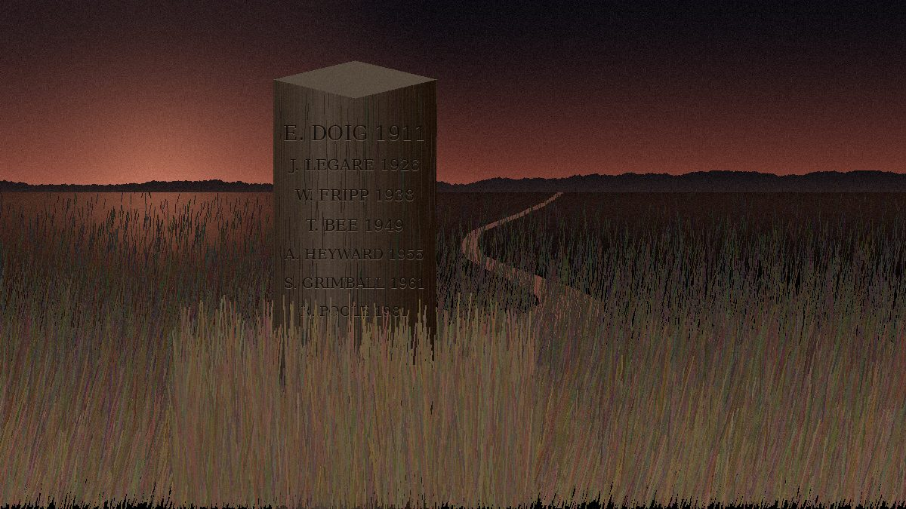

Interactive
Tidewater
Two hundred and seventeen acres of Colleton County marsh, surveyed eleven times since 1911, and no two answers alike. The county wants a twelfth. Something out there is keeping its own book, and it has been short by one since the day Ezra Doig walked out and did not come back.
Walk the line →